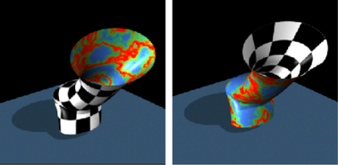

通过双面着色，可以在一侧使用一个材质，在另一侧使用其他材质，来为曲面着色。这是唯一可为 NURBS 曲面应用多种材质的方法。同时使用“条件”(Condition)和“采样器信息”(Sampler info)工具可创建该效果。
创建双面着色曲面
- 在“Hypershade”中，创建下列内容中的每一项：
- 材质（该过程使用“Phong”材质）。
- 一个采样器信息(Sampler info)工具。使用“采样器信息”(Sampler Info)工具可访问摄影机和曲面信息，您可以在渲染时将这些信息传送到着色网络。
- 一个条件(Condition)工具。“条件”(Condition)工具允许您指定贴图到曲面每一侧的纹理。
- 棋盘格纹理。
- 凹陷纹理。
- 将“Phong”材质指定给曲面。
- 在“Hypershade”中，将“棋盘格”(Checker)的“输出颜色”(Out Color)属性连接到“条件”(Condition)的“为 True 时的颜色”(Color If True)属性。
- 将“凹陷”(Crater)的“输出颜色”(Out Color)属性连接到“条件”(Condition)的“为 False 时的颜色”(Color If False)属性。
- 将“SamplerInfo”“翻转法线”(Flipped Normal)属性连接到“条件”(Condition)的“第一项”(First Term)或“第二项”(Second Term)属性。
- 将“条件”(Condition)的“OutColor”属性连接到“Phong”的“颜色”(Color)属性。
- 执行测试渲染。
Maya 使用不同的纹理对曲面的每一侧着色。
Hypershade 中生成的连接的图像。
交换曲面上的纹理
您可以使用“条件”(Condition)工具指定应用到曲面前面和后面的纹理。
为双面着色交换纹理贴图
- 选择“条件”(Condition)节点。在“特性编辑器”(Property Editor)的“条件属性”(Condition Attributes)部分中，将“运算”(Operation)属性更改为“不等于”(Not Equal)（如果设置为“不等于”(Not Equal)，则将其更改为“相等”(Equal)）。
- 执行测试渲染。下图显示了结果。
